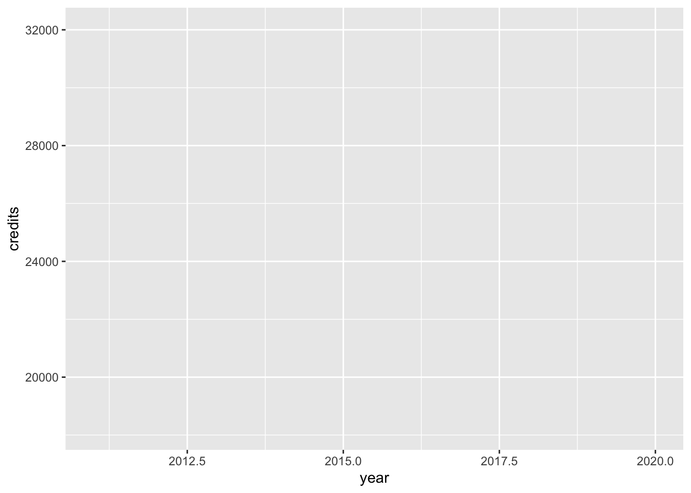
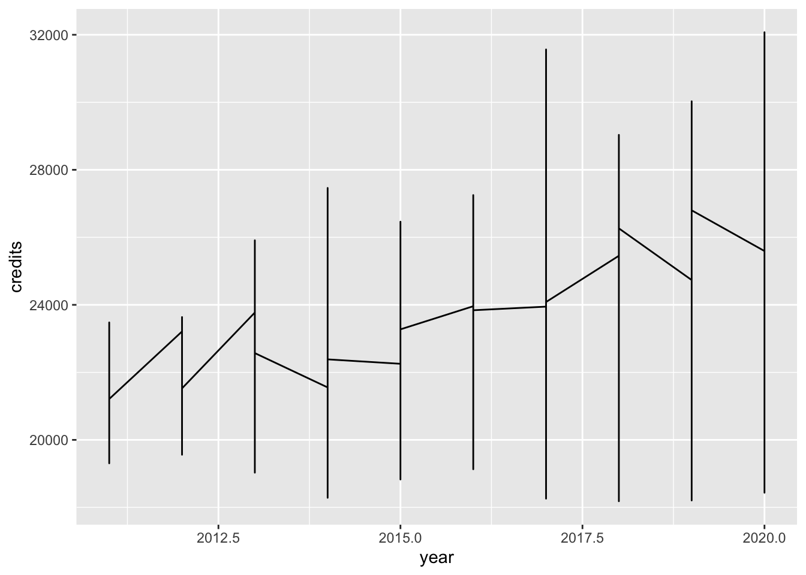
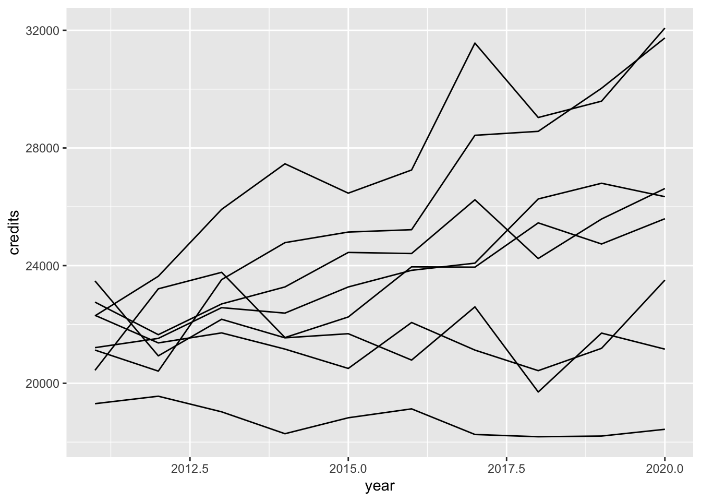
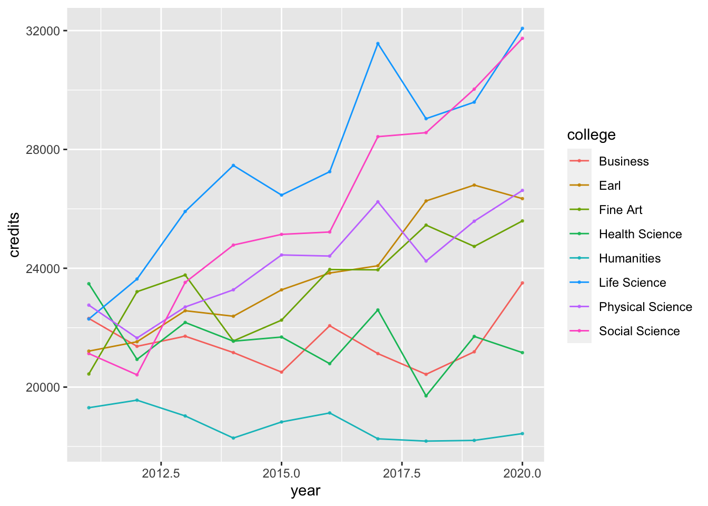
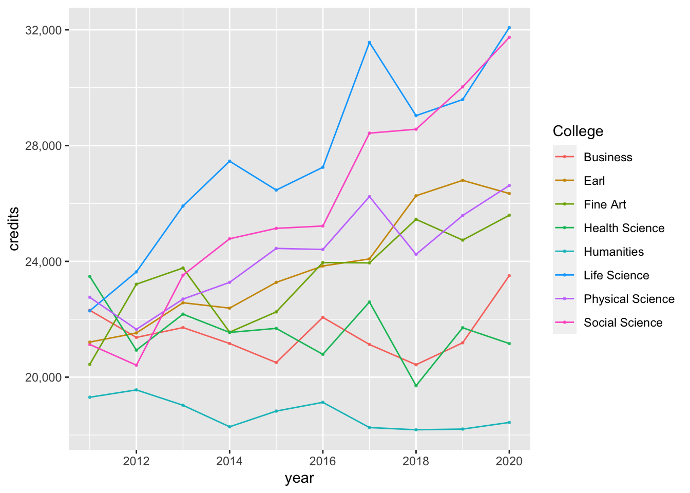
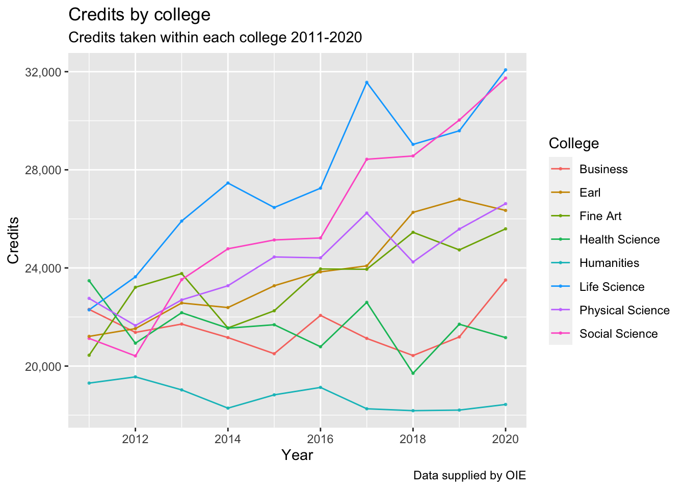
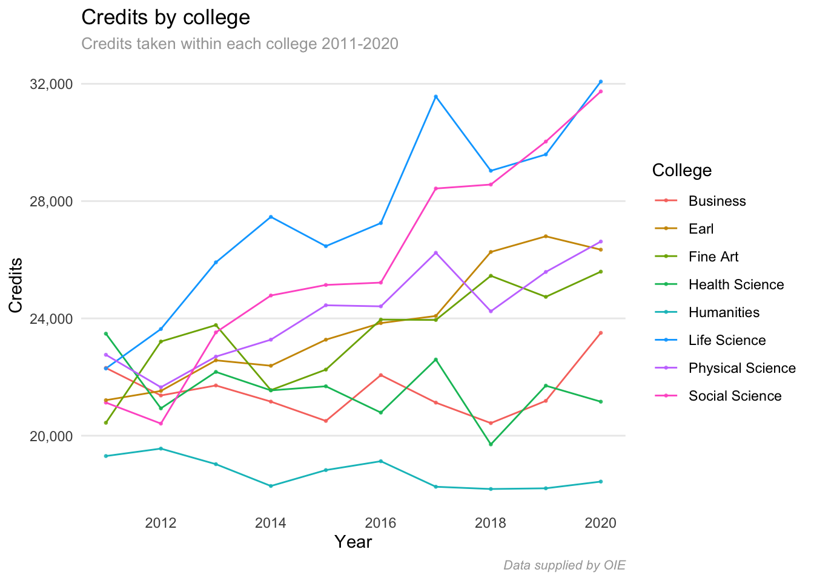

Chapter 2 The basics of ggplot2
Every layer in a ggplot has five components
- data
- aesthetics
- geom
- stat
- position
In addition to these five components we need to understand scales, guides, and themes. We will do this with a set of examples. Our first example is straight forward line plot showing the number of credits taken in each college from 2011 to 2020. As we walk though this, we will look at three components
- data
- aesthetics
- geom
and
- scales
- guides
- themes
2.1 Data
We will create a data set consisting of college credit counts for 2011-2020.
library(tidyverse)
library(purrr)
make_credits <- function(college) {
slope <- rnorm(1, 500, 500)
intercept <- rnorm(1, 20000, 2000) %>% floor()
x <- 1:10
college <- rep(college, 10)
noise <- rnorm(10, 1000, 1000)
credits <- intercept + slope*x + noise
output_df <- tibble(college = college, year = 2010 + x, credits = credits ) %>%
mutate(credits = as.integer(credits))
return(output_df)
}
colleges <- c('Fine Art', 'Business', 'Physical Science', 'Social Science',
'Health Science', 'Humanities', 'Life Science', 'Earl')
credits_by_college <- map_dfr(colleges, make_credits)This data output is in tidy format. In tidy data
- Each variable forms a column.
- Each observation forms a row.
- Each type of observational unit forms a table.
For our data set, the observations are the number of credits offered by a specific college in a given term. The variables are year and credits. Your data should always be tidy when using ggplot.
library(gt)
head(credits_by_college) %>% gt()| college | year | credits |
|---|---|---|
| Fine Art | 2011 | 20441 |
| Fine Art | 2012 | 23211 |
| Fine Art | 2013 | 23772 |
| Fine Art | 2014 | 21554 |
| Fine Art | 2015 | 22254 |
| Fine Art | 2016 | 23959 |
In our plot the data layer is created with the following code. Note that there is nothing on plot. There are no axes, no graphs, no colors, no legend. Just a blank canvas. The reason for this is that in ggplot, the plot is created when we map the variables in the data to visual elements in the plot. This is done with the aes() function.
ggplot(credits_by_college)
2.2 aesthetics
When we add the aes() call within the ggplot call, we produce a set of axes on our plot. This is because we have mapped the variable year to the x axis in our graph, and the variable credits to the y-axis in our graph. We do not see a plot yet because we have not yet told ggplot what type of geometric object we want to use to in our plot. We do that next.
ggplot(credits_by_college, aes(x = year, y = credits))
2.3 geom
2.3.1 WTF
In our next plot we have chosen the line geom for our graph. This does not give us the result that we are looking for. We are trying to draw a line chart showing credits for each year, for each college. The mistake we have made is that we have not assigned the college variable to as visual aspect of our graph. We do so in the next graph.
ggplot(credits_by_college, aes(x = year, y = credits)) + geom_line()
2.3.2 More aesthetics?
This graph gives us something closer to what we are looking for, but it is still not quite there.
ggplot(credits_by_college, aes(x = year, y = credits, group = college)) + geom_line()
The problem is that we would like the lines to be different colors, and we would like each color to be associated with a color. So we have to map the variable college to another aesthetic, color.
ggplot(credits_by_college, aes(x = year, y = credits, group = college, color = college)) +
geom_line() + geom_point(size = .5, alpha = .8)
2.4 Scale
library(scales)##
## Attaching package: 'scales'## The following object is masked from 'package:purrr':
##
## discard## The following object is masked from 'package:readr':
##
## col_factorggplot(credits_by_college, aes(x = year, y = credits, group = college, color = college)) +
geom_line() + geom_point(size = .5, alpha = .8) +
scale_x_continuous(breaks = pretty_breaks()) +
scale_y_continuous(labels = comma)2.5 Guide
ggplot(credits_by_college, aes(x = year, y = credits, group = college, color = college)) +
geom_line() + geom_point(size = .5, alpha = .8) +
scale_x_continuous(breaks = pretty_breaks()) +
scale_y_continuous(labels = comma) +
guides(color = guide_legend(title = "College"))
2.6 Labels
ggplot(credits_by_college, aes(x = year, y = credits, group = college, color = college)) +
geom_line() + geom_point(size = .5, alpha = .8) +
scale_x_continuous(breaks = pretty_breaks()) +
scale_y_continuous(labels = comma) +
guides(color = guide_legend(title = "College")) +
labs(title = "Credits by college",
subtitle = "Credits taken within each college 2011-2020",
caption = "Data supplied by OIE") +
xlab("Year") +
ylab('Credits')
2.7 Theme
ggplot(credits_by_college, aes(x = year, y = credits, group = college, color = college)) +
geom_line() + geom_point(size = .5, alpha = .8) +
scale_x_continuous(breaks = pretty_breaks()) +
scale_y_continuous(labels = comma) +
guides(color = guide_legend(title = "College")) +
labs(title = "Credits by college",
subtitle = "Credits taken within each college 2011-2020",
caption = "Data supplied by OIE",
x = 'Year',
y = 'Credits') +
theme_minimal() +
theme(
panel.grid.major.x = element_blank(),
panel.grid.minor.x = element_blank(),
panel.grid.minor.y = element_blank(),
plot.subtitle = element_text(color = "#a6a6a6", size = 10),
plot.caption = element_text(color = '#a6a6a6', size = 8, face = 'italic')
)